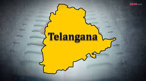

Telangana is a state in India situated on the south-central stretch of the Indian peninsula on the high Deccan Plateau. It is the eleventh-largest state and the twelfth-most populated state in India with a geographical area of 112,077 km2 (43,273 sq mi) and 35,193,978 residents as per 2011 census. On 2 June 2014, the area was separated from the northwestern part of Andhra Pradesh as the newly formed state with Hyderabad as its capital. Its other major cities include Warangal, Nizamabad, Khammam, Karimnagar and Ramagundam. Telangana is bordered by the states of Maharashtra to the north, Chhattisgarh to the northeast, Karnataka to the west, and Andhra Pradesh to the east and south. The terrain of Telangana region consists mostly is part of Deccan Plateau and dense forests covering an area of 27,292 km2 (10,538 sq mi). As of 2019, the state of Telangana is divided into 33 districts.